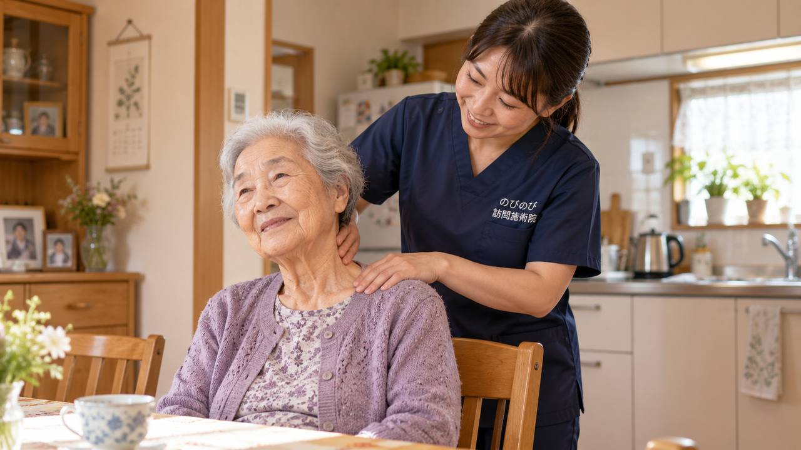

髪をとかそうと腕を上げると肩がズキッとする。上着の袖に手が通らない。夜、肩が痛んで寝返りのたびに目が覚める。北区にお住まいで、そんな肩の痛みを我慢したまま、通院そのものも負担になっている方はめずらしくありません。のびのび訪問施術院は北区のご自宅へ伺い、肩や肩甲骨、首まわりのこわばりを和らげ、動かしやすさを保つお手伝いをします。治療の本体は医療機関にあり、鍼灸はその横で支える役割にとどまります。
この記事のポイント
北区内のご自宅へ伺います。五十肩は、夜に痛む時期と、腕を回しにくい時期とで、できることが変わります。診断も治療方針も医療機関が中心です。訪問での鍼灸は、その方針に沿った補助として関わります。通院がむずかしく医師の同意が得られた場合に医療保険が使えます。自己負担は1割の方で1回およそ395円（総額3,950円）です。転んだあとの強い痛み、急な腫れや発熱、腕に力が入らないといったときは、先に整形外科へご相談ください。効果には個人差があります。
梅田の喧騒のそばで、腕が上がらないという静かな困りごと
大阪市北区は、梅田や大阪駅、中之島といった都心の顔を持ちながら、天満や南森町、扇町、中崎町のように古い町並みと下町の暮らしが今も息づくエリアです。天神橋筋六丁目から続く商店街をよく歩いてきた方、都心で長く働き続けてきた世代、そして単身で暮らす高齢のご家庭もめずらしくありません。そんな北区で「いつの間にか肩が横に上がらない」「後ろに手が回らない」という五十肩のつらさを抱え、通院そのものが負担になっている方に向けて、ご自宅へ伺う施術のことをお伝えします。
五十肩は正式には肩関節周囲炎と呼ばれ、はっきりした転倒やけがの記憶がなくても、ある日を境に肩が動かしにくくなっていきます。まずは「五十肩・肩の痛みで腕が上がらない方へ」もあわせてご覧いただくと、症状の全体像がつかみやすくなります。
着替え・洗髪・背中のファスナー、日常の一つひとつがつらくなる
五十肩でお困りの方からよく伺うのは、腕を横や後ろに上げる動きのつらさです。かぶりの服を着替えるとき、髪を洗うとき、エプロンの紐を後ろで結ぶとき、背中のファスナーに手を伸ばすとき。これまで何気なくできていた動作の一つひとつが、肩の痛みと引っかかりで思うようにいかなくなります。とくに夜間痛で寝返りのたびに目が覚め、眠りが浅くなってしまう方も多く、都心の集合住宅で一人静かに我慢を重ねているうちに、少しずつ動かせる範囲が狭まっていきます。
五十肩には、痛みが強く出る急性期、痛みは落ち着いても関節が固まってしまう拘縮期、少しずつ動きが戻ってくる回復期という段階があります。急性期に無理に動かすとかえって痛みを長引かせることがあるため、その時期は無理に動かさず安静と痛みの緩和を大切にし、拘縮期から回復期にかけては、固まった肩の可動域を保ち、広げていくための機能訓練を段階的に取り入れていきます。時期に応じて手のかけ方を変えていくことが、日常動作を取り戻す土台になります。
その肩の痛み、五十肩ではないこともあります
肩をぶつけたり強打したあとに痛みが出た場合、腕がまったく上がらず力が入らない場合、腕や手にしびれを伴う場合は、腱板損傷など五十肩とは別の疾患が隠れていることがあります。こうしたサインがあるときは、まず整形外科を受診して、画像などで肩の状態を確かめていただくことが大切です。自己判断で我慢を続けたり無理に動かしたりせず、必要な検査を先に受けていただくことを、私たちはいつもお願いしています。
訪問での鍼灸マッサージは、病気そのものを治すものではありません。医師の診断のもとで、痛みをやわらげたり、固まった肩まわりの動きを保ったりすることを目的とした施術であることを、あらかじめご理解いただけると安心です。
北区のご自宅まで伺います、タワーマンションもオートロックも
私たちはご予約の時間に合わせてご自宅へ伺い、その場で肩の状態を確かめながら施術と機能訓練を行います。中之島や梅田周辺のタワーマンション、天満や中津のオートロックの集合住宅、大淀や豊崎、長柄、国分寺、本庄といった住宅街まで、北区内であればお住まいの形を問わずお伺いします。エントランスでの受付やエレベーターでの移動にも慣れていますので、はじめての方もどうぞ構えずにご相談ください。通院の付き添いを頼める家族が近くにいない単身の方にも、ご自宅で受けられる施術は続けやすい選択肢になります。
肩まわりの筋肉のこわばりをゆるめ、可動域を保つための機能訓練は施術に含みます。北区全体のサービス内容は「大阪市北区の訪問鍼灸マッサージ」で、どこまで伺えるかは「対応エリアはどこまで来てもらえる？」でご確認いただけます。
医療保険で受けられます、料金はわかりやすく一律
医療保険のはり・きゅうの対象となるのは、神経痛・リウマチ・頸肩腕症候群・五十肩・腰痛症・頸椎捻挫後遺症の6疾病で、五十肩はこの中に含まれています。ご利用には医療保険（療養費）と医師の同意書が必要で、要介護認定は不要です。介護保険をお使いの方も、その限度額とは別枠で併用いただけます。なお、同一部位について医療保険のリハビリと鍼灸を同じ月に同時に算定することはできません。
料金は1回の施術で総額3,950円、自己負担は1割の方で約395円です。週2回で1割の方なら月に約3,160円が目安になります。エリア内は出張費なし・料金一律で、機能訓練も含みます。効き方には個人差がありますので、まずはご相談ください。仕組みの詳しい説明は「料金はいくら？医療保険の自己負担額と仕組み」をご覧ください。
よくある質問
北区にも来てもらえますか？
はい。のびのび訪問施術院は北区のほぼ全域に伺います。お住まいが駅から離れていても料金は同じです。出張費の加算もありません。まずはお住まいと肩の困りごとをお聞かせください。
五十肩は保険の対象ですか？
長く続く肩の痛み・こわばりに対して医師の同意があり、通院が負担であれば、はり・きゅうで医療保険を使える場合があります。先に医療機関で診てもらい、同意書についてはこちらで手配を引き受けます。
痛くて腕が上がらなくても受けられますか？
はい。痛みが強い時期は肩を無理に動かさず、肩甲骨や首まわりのこわばりをゆるめることを中心にします。痛みがやわらいできた段階で、無理をしない形で肩を動かす運動を、鍼灸とあわせて少しずつ加えます。
夜、肩が痛くて眠れません。眠れないほど痛むときはどうですか？
肩まわりの緊張を和らげることで、夜の痛みが楽になり休めるようになる方もいます。寝るときに楽な姿勢やクッションの置き方もお伝えします。変化の出方には個人差があり、痛みが引かないときは主治医にもお伝えください。
いくらかかりますか？
施術1回の総額は3,950円、1割負担ならおよそ395円をお支払いいただきます。月額の目安は、1割の方で週2回ならおよそ3,160円です。お支払いはひと月分をまとめてで、明細をお渡しします。
介護保険を使っていても利用できますか？
はい。訪問の鍼灸は医療保険で算定するため、介護保険の区分支給限度額とは別枠になります。ケアマネジャーがいらっしゃる場合は情報を共有しながら進め、介護保険のサービスと一緒にご利用になれます。
要介護の認定を持っていませんが利用できますか？
できます。医療保険を使う形のため、介護保険の認定を受けていない方でも、医師の同意があればご利用になれます。認定の結果を待っている段階の方や非該当の方も、対象になり得ます。
家族やケアマネジャーからの相談でも大丈夫ですか？
はい。ご相談はご本人からでも、ご家族やケアマネジャー、施設のご担当者からでもかまいません。エリア内かどうかのご確認も、お電話で承ります。相談に費用はかかりません。